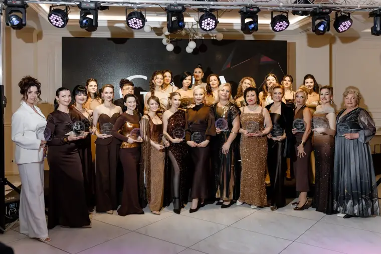
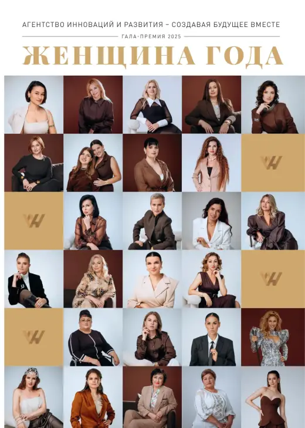
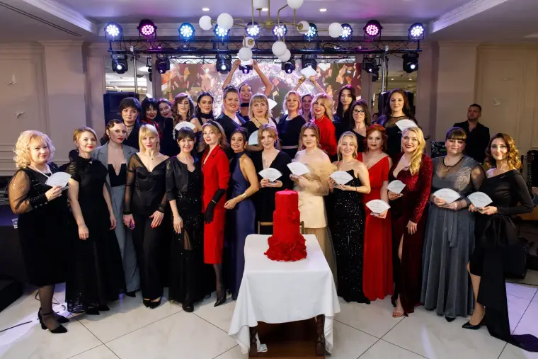
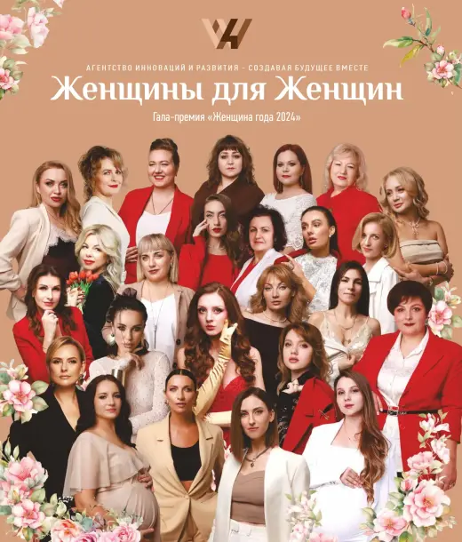

Готовим программуPreparing the programmePregătim programul
Собираем команду, партнёров и идеи вечера.We are putting together the team, the partners and the ideas for the evening.Adunăm echipa, partenerii și ideile pentru seară.
Гала ПремияGala AwardGala premiilor
Наша команда с вниманием и любовью готовит церемонию, на которой мы отметим женщин, чьи достижения вдохновляют: в бизнесе, обществе, социальной сфере и культуре. Подробности расскажем совсем скоро.Our team is carefully preparing a ceremony to honour women whose achievements inspire: in business, society, the social sphere and culture. We will share the details very soon.Echipa noastră pregătește cu grijă ceremonia în cadrul căreia vom omagia femeile ale căror realizări inspiră: în afaceri, societate, domeniul social și cultură. Vă vom povesti detaliile foarte curând.
О премииAbout the awardDespre premiu
Наша команда с вниманием и любовью готовит церемонию, на которой мы отметим женщин, чьи достижения вдохновляют: в бизнесе, обществе, социальной сфере и культуре. Подробности расскажем совсем скоро.Our team is carefully preparing a ceremony to honour women whose achievements inspire: in business, society, the social sphere and culture. We will share the details very soon.Echipa noastră pregătește cu grijă ceremonia în cadrul căreia vom omagia femeile ale căror realizări inspiră: în afaceri, societate, domeniul social și cultură. Vă vom povesti detaliile foarte curând.
Организатор премии — Агентство инноваций и развития. Условия участия, порядок проведения, Комиссия и критерии оценки описаны в Положении о премии.The award is organised by the Innovation and Development Agency. Terms of participation, the procedure, the Committee and the evaluation criteria are described in the Award Regulations.Premiul este organizat de Agenția pentru Inovare și Dezvoltare. Condițiile de participare, procedura, Comisia și criteriile de evaluare sunt descrise în Regulamentul premiului.
Что дальшеWhat’s nextCe urmează
Собираем команду, партнёров и идеи вечера.We are putting together the team, the partners and the ideas for the evening.Adunăm echipa, partenerii și ideile pentru seară.
Заявки принимаются от участниц платформы Women’s Hub.Applications are accepted from members of the Women’s Hub platform.Cererile sunt primite de la membrele platformei Women’s Hub.
Вечер, на котором мы отметим женщин, чьи достижения вдохновляют.An evening to honour women whose achievements inspire.O seară în care vom omagia femeile ale căror realizări inspiră.
Как это былоHow it wasCum a fost
Две церемонии уже позади: посмотрите фото, видео и журналы прошлых лет.Two ceremonies are already behind us: see the photos, the video and the magazines of previous years.Două ceremonii au rămas în urmă: vedeți fotografiile, video-ul și revistele din anii trecuți.


12 марта 202612 March 202612 martie 2026
26 номинаций, посольства шести стран и вечер признания достижений женщин.26 categories, embassies of six countries and an evening recognising women’s achievements.26 de categorii, ambasadele a șase țări și o seară de recunoaștere a realizărilor femeilor.
Открыть сайтOpen the siteDeschide site-ul

4 марта 20254 March 20254 martie 2025
Первая церемония: более 130 гостей и награды в пяти сферах.The first ceremony: more than 130 guests and awards in five fields.Prima ceremonie: peste 130 de invitați și premii în cinci domenii.
Открыть сайтOpen the siteDeschide site-ulЖенщина Года 2026Woman of the Year 2026Femeia Anului 2026
Обе церемонии в кадре: посмотрите, как это было.Both ceremonies on screen: see how it was.Ambele ceremonii în imagini: vedeți cum a fost.
Не воспроизводится? Смотреть на YouTubeNot playing? Watch on YouTubeNu se redă? Vezi pe YouTube
Не воспроизводится? Смотреть на YouTubeNot playing? Watch on YouTubeNu se redă? Vezi pe YouTube